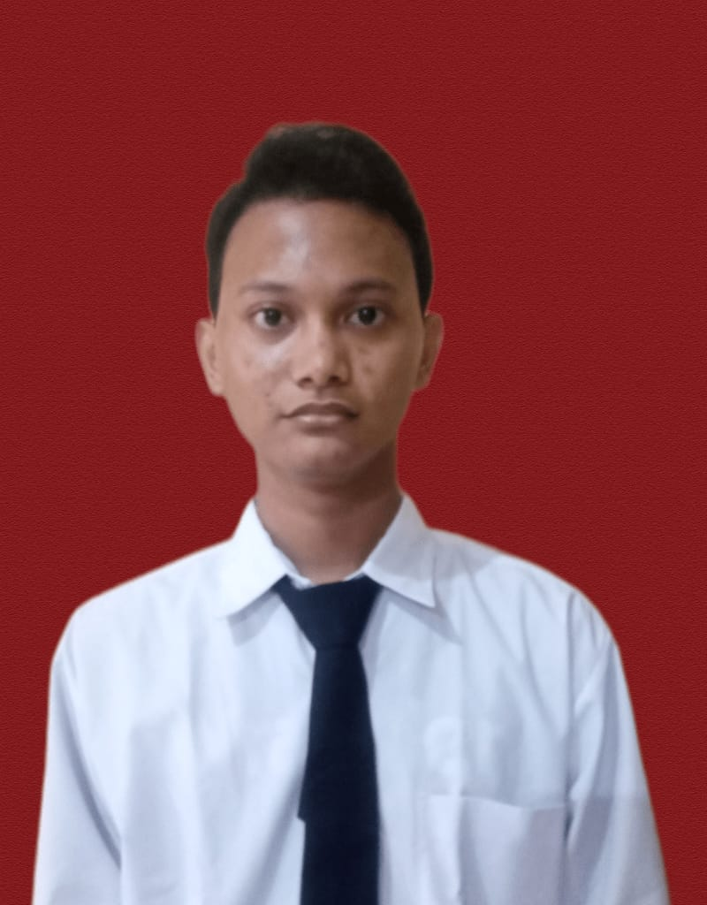

S1 Informatika
Universitas Gunadarma
2021-2025, IPK 3.73
Halo, saya
Fresh graduate Informatika yang terbiasa mengurus perangkat, aset, dan infrastruktur TI di perusahaan keuangan, dan tertarik mengolah data serta membangun jaringan.

Saya lulusan S1 Informatika Universitas Gunadarma (2021-2025) dengan IPK 3.73. Pengalaman magang saya di IT Operations PT Bursa Efek Indonesia mencakup konfigurasi perangkat, migrasi data, pengelolaan aset TI, dokumentasi, dan koordinasi dengan vendor.
Saat ini saya magang di IT Infrastruktur PT Bank Mandiri, mempelajari solusi endpoint management. Saya bisa bekerja mandiri maupun dalam tim, dan cepat beradaptasi di lingkungan profesional.
PT Bank Mandiri (Persero) Tbk
PT Bursa Efek Indonesia
Universitas Gunadarma
2021-2025, IPK 3.73
Memulai Pemrograman dengan Python
Dicoding, Juni 2025
Belajar Dasar Visualisasi Data
Dicoding, Oktober 2025
Fundamental Networking (2022)
Local Area Network Using Cisco Router (2023)
Go-Lang for Beginner (2023)
JavaScript Programming Language Fundamental (2024)
Network Design and Configuration Using Switch Device (2024)
Local Area Network Design and Configuration (2025)
Terbuka untuk peluang di IT Operations, Infrastruktur, Data Analyst, dan Network Engineering.